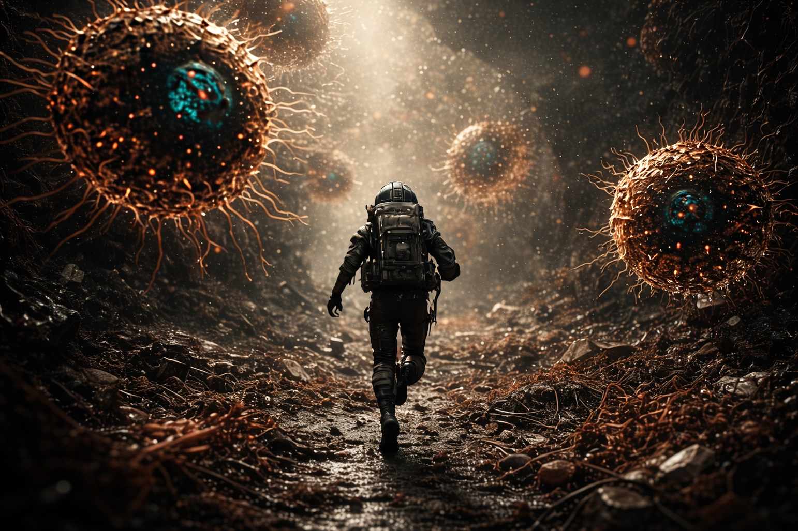
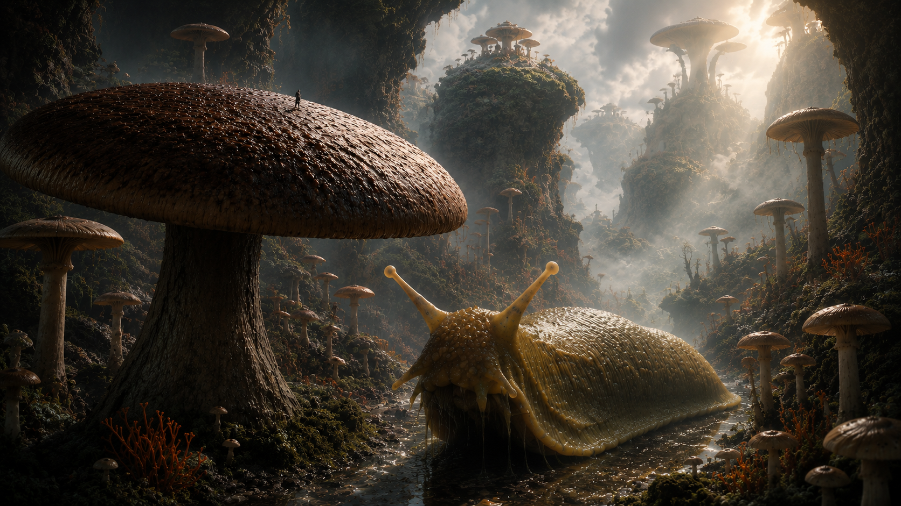

Game Walkthrough
Atlas Vegrandis is an open-world survival craft game about building living systems from the inside out. This page outlines the current progression path, major zones, core mechanics, and concept direction.
You are an Endonaut.
You pilot an organic nanobot powered by ATP, the same molecular fuel that powers life. You scan, harvest, synthesize, and assemble living structures to survive environments that keep escalating in scale and complexity.
You start the size of a bacterial cell, 1 micrometer. The main storyline is driven by expanding your available energy. When certain thresholds are met, player bonuses are received. Your character can expand its size, and add various sci fi components. These components influence the way that you can interact with the environment (faster movement, faster harvesting, larger storage, carrying capacity (number of vesicles), etc.). You can freely scale up or down, up to a maximum of the ATP threshold that you've achieved. If you run out of ATP, your bot will completely power down. You can drop a new bot at a landing zone (respawn), and scrap your previous bot for materials, if you can reach it.
To accomplish this, you are equipped with two important tools: a scanner and a synthesizer. The scanner shows the world in terms of its hydrophobic properties (a gradient from water-interacting, blue, to water-repelling, yellow). The synthesizer allows the player to create complex biological structures from simpler components. For example, combining phosphates and fatty acids to build lipids.
You can build cellular structures that you can enter to help navigate the environment. One of the earliest structures is the vesicle, which are used for storage. To build this, you learn to create phosphates from phosphorous and oxygen, and to combine those with fatty acids to make lipids. Several lipids can be combined into a sheet of lipids called a membrane, and two sheets can be used to make a vesicle.
The next structure that can be built is a protocell, a base structure which is made from 5 membranes. Resources can be collected manually, but doing so is laborious and time consuming. One of the major uses for protocells is as harvesters. To make harvesters, you add specific channels or transporters to a protocell, for example, RbsC for ribose collection, GLUT1 for a basic glucose transporter, GLUT2 for high capacity glucose transport, and others.
The basic raw materials for building in the game are water, oxygen, phosphorus, fatty acids, ribose, glucose, and glucosamine, though extracellular components can be harvested from other products (muramic acid, glucosamine, and polysaccharides). Part of the flow of the game is controlled by making structures and craftable items out of more advanced amino acids, which are only found in certain zones. To build anything in those zones, you have to have the tech to do it.
Another game flow control is power. You're really limited in the amount of power that you can generate initially, and will have to build and upgrade structures to scale up. You start by manually crafting ATP by synthesizing adenine, and combining it with ribose and 3 phosphates. Manually crafting ATPs is also laborious and time consuming, and you will need millions of them.
The core game loop is to explore → gather resources → build structures and craft items that enable scaling up energy production → enable further exploration.
01 Primordial Zone

The player begins by learning the basic survival loop: scanning the environment, harvesting simple molecular resources, synthesizing ATP, and building the first primitive biological structures. Missions in this zone establish the foundation for later cellular automation.
This zone has large aqueous bodies to explore, as well as dry land. Most things are harmless, except for the (rare) bacterial species that produce toxins.
Main events:
- Dropped at landing zone
- AI suggests that you start scanning your surroundings, tells you the button/key to do it
- When you get near a resource, an on screen prompt to take it appears
- Start exploring/scanning/collecting resources (ribose, phosphorus, fatty acids, 3 amino acids are common at this point)
- Glycine, aspartic acid, glutamine
- When you gather 10 units in total of any resources, the vesicles mission is launched.
- After 10 minutes in the game, the ATP mission is launched.
- When you find your first amino acid, the harvester mission is launched.
- When you find you finish building your first vesicle, the endoplasmic reticulum mission is launched.
- Protocells will start to decay over time, and will trigger the cell wall mini task if you repair it
- After finishing the ATP task, you're prompted to search the environment more, initiating the solar power mission.
- AI informs player that a reliable source of sugars should be found for walls and other structural support. Seek out an area rich in sugars and establish a base nearby.
02 Fungal Zone

The Fungal Zone introduces new environmental mechanics and pressures the player toward eukaryotic complexity. The central milestone pushes the player to build more organized internal cellular systems.
The Fungal Zone is a low-oxygen biome rich in sugars, fungal structures, megafauna, antibiotics, all of which drive the transition toward eukaryotic complexity. The Fungal Zone will be the player's source of sugars for most of the game.
In this zone you will encounter the first megafauna. Fungi-eating beetles and slugs. The former may actively target the player and try to eat them if seen. The slug will not target the player, but may eat or destroy their structures.